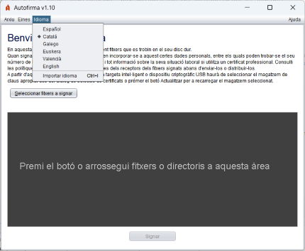
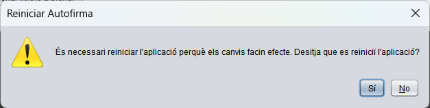
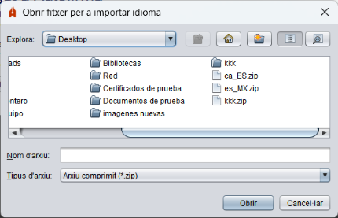

En la pantalla principal d'Autofirma, es permet canviar l'idioma de l'aplicació mitjançant el menú "Idioma" situat en la part superior. Els idiomes disponibles són espanyol, anglès, català, gallec, basc i valencià.

Una vegada seleccionat, se sol·licitarà a l'usuari reiniciar Autofirma per a aplicar els canvis correctament.

Autofirma també permet a l'usuari importar un idioma mitjançant un arxiu .zip que contingui els recursos d'aquest. Aquesta opció es pot usar seleccionant l'opció "Importar Idioma" dins del menú "Idioma".
